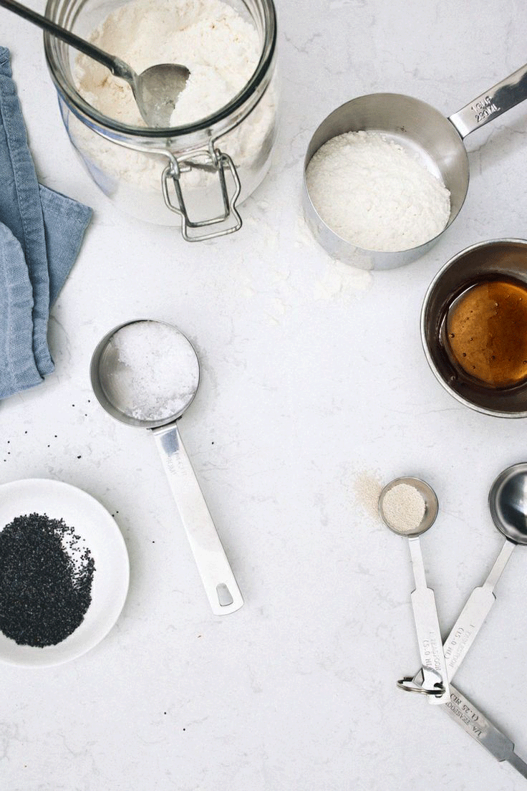

let's get baking
1
Preheat oven to 350 degrees. Butter five 8-inch round cake pans, and line with parchment (you may need to bake in batches). Butter parchment, and dust with flour, tapping out excess. Sift flour, baking powder, and 1/2 teaspoon salt into a large bowl. Combine milk and vanilla. Beat butter with a mixer on medium speed until very smooth. With machine running, gradually add sugar, and beat until pale and fluffy, about 3 minutes.
2
Reduce speed to low, and add flour mixture in 3 additions, alternating with milk mixture, beginning and ending with flour. Beat until just combined; do not overmix.
3
Beat eggwhites in a clean mixer bowl on medium speed until stiff (but not dry) peaksform (about 3 minutes.) Gently fold egg-white mixture into batter in 3 additions.
4
Divide batter among 5 bowls, and tint each with food coloring to create different pastel shades. Spread each into a prepared pan. Bake until a toothpick inserted into the centers comes out clean, 18 to 20 minutes. Let cool completely in pans on wire racks.
5
Loosen edges of cake with a small metal spatula or paring knife. Reinvert cakes, top side up. Let cool completely.
6
Trim top of each cake to make surface even. Spread 1 cup buttercream onto top of 1 cake. Top with another cake. Repeat, spreading 1 cup buttercream between each layer.
7
Cover cake with fondant. Refrigerate for 30 minutes.